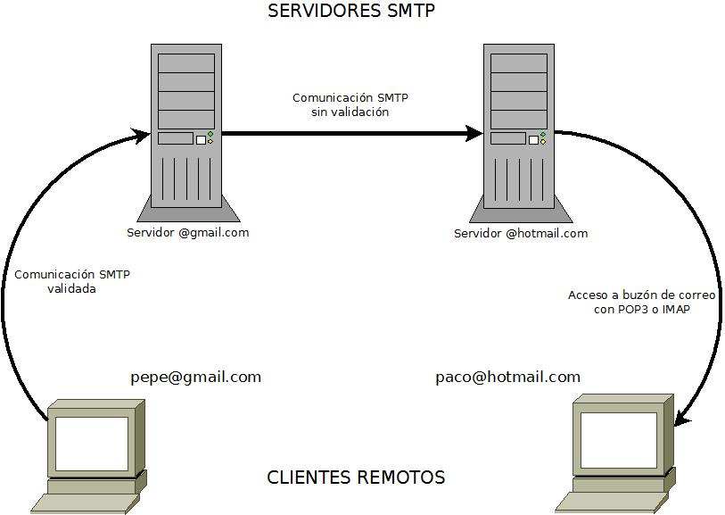
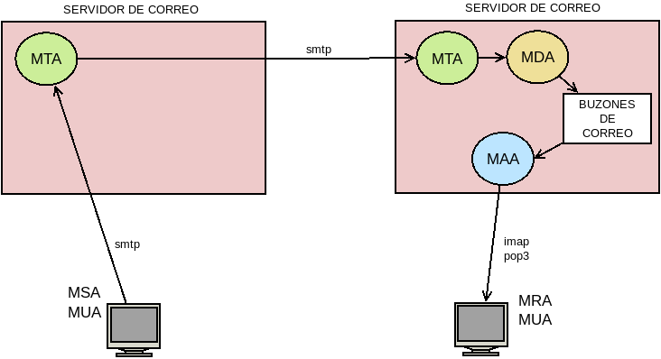

7.3.1. Protocolos¶
7.3.1.1. Descripción¶
Ya se ha comentado que el servicio de correo lo componen, en realidad, dos protocolos. Para ilustrar el uso de estos protocolos, echemos un vistazo a la siguiente figura:
Se ilustra cómo el usuario pepe con cuenta en gmail envía un mensaje a paco con cuenta en hotmail. El primero, con un cliente de correo instalado en su ordenador, se comunica mediante el protocolo SMTP con gmail. En esta comunicación se identifica como pepe usando contraseña. Recibido el mensaje por el servidor, éste comprueba si la destinataria es otra cuenta del propio servidor o de un servidor distinto. Al ser cuenta de hotmail, se comunica con el servidor correspondiente con una conexión SMTP sin autenticar y le transmite el mensaje. De este modo, el mensaje llega al servidor destino y acaba el papel del protocolo SMTP en la comunicación. En algún momento, paco, sentado frente a su equipo personal, deseará leer sus mensajes y para ello con un agente de correo (MUA), como Outlook, se conectará al servidor usando protocolos como POP3 o IMAP.
Nota
El esquema anterior era el habitual hasta la irrupción de los webmail, esto es, de los clientes de correo electrónico basados en interfaz web, que existen desde antiguo, pero que vinieron a imponerse a los MUA tradicionales a partir de la irrupción de GMail. En un esquema con webmail el cliente final (paco@hotmail.com) se conecta a un servidor web usando su navegador habitual y es el servidor web el que debe acceder a las buzones de usuario. El cómo lo haga puede variar y no ser mediante un protocolo estándar, ya que muy comúnmente el propietario del servicio de correo y del servidor web son la misma compañía, pero es posible utilizar IMAP como hacen los MUA de usuario final. Este es el caso del webmail Roundcube.
Al describir este proceso suelen usarse los siguentes términos:
- Servidor
- MTA, o sea, Agente de transporte de correo
Es el servidor SMTP
- MDA, o sea, Agente de entrega de correo
Es el programa que entrega el correo al usuario en sus buzones del propio servidor[1].
- MAA, o sea, Agente de acceso de correo
Es el programa que se encarga de hacer accesibles a equipos remotos los buzones de correo del servidor. Se corresponde con el servidor POP3 o IMAP.
- Cliente
- MSA, o sea, Agente de envío de correo
Es el cliente SMTP, es decir, el programa encargado de dejar en el MTA mensajes. Obsérvese que cuando un servidor entrega mensajes a otro servidor actúa como cliente de este, por tanto, hace la labor de un MSA.
- MRA, o sea, Agente de recuperación de correo
Es el programa que en el equipo remoto se comunica con el MAA del servidor para traer a él los mensajes almacenados en los buzones del servidor.
- MUA, o sea, Agente de usuario de correo
Es el cliente de correo (mutt, thunderbird, outlook, etc.)
Nota
En el cliente es bastante común que la aplicación que gestione el correo se encargue de realizar las funciones de MSA, MRA y MUA; e incluso la de un MDA, si se disponen varios buzones de recepción de correo.
Un esquema de funcionamiento usando estos términos es el siguiente:
7.3.1.2. Puertos¶
Los puertos característicos del servicio son los siguientes:
Servicio de buzón de correo:
- 143/TCP
Para el servicio IMAP tanto inseguro como seguro con negociación previa (STARTTLS).
- 993/TCP
Para el servicio IMAPs, esto es, IMAP tunelizado con SSL.
- 110/TCP
Para el servicio POP3 inseguro.
- 995/TCP
Para el servicio POP3s, esto es, POP3 tunelizado con SSL.
Servicio de transferencia de correo:
- 25/TCP
Es el puerto en el que tradicionalmente escuchan los MTA y esperan recibir comunicaciones no autenticadas de otros MTA. Puede usarse también, no obstante, para que los MSA se autentiquen y entreguen mensajes de correo al MTA. El protocolo puede ser SMTP inseguro o, más comúnmente en la actualidad, seguro con negociación previa.
- 465/TCP
Puerto dedicado a SMTPs (esto es, SMTP tunelizado con SSL) para que los MSA se autentiquen y transfieran los mensajes de correo al MTA.
- 587/TCP
Como el anterior, puerto destinado a la comunicación autenticada entre MSA y MTA, pero usando SMTP seguro con negociación previa.
Notas al pie